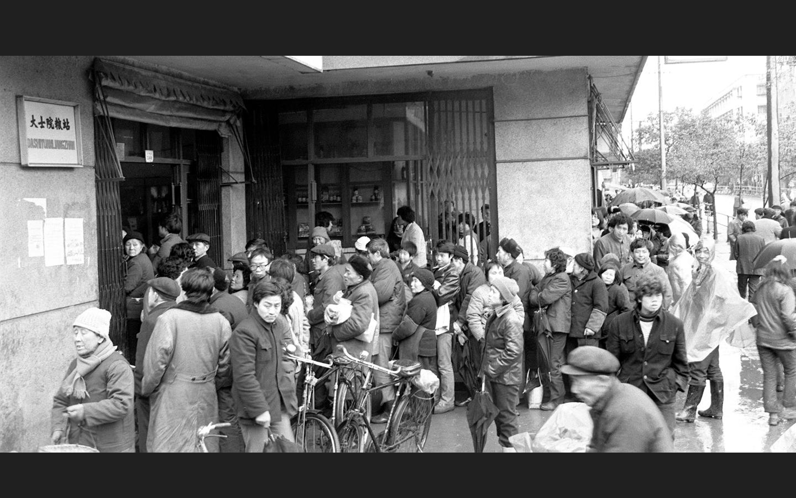
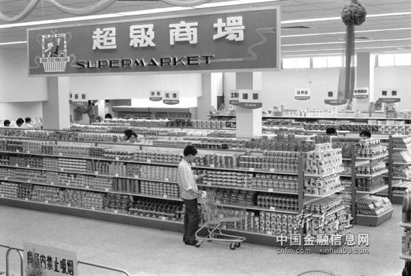
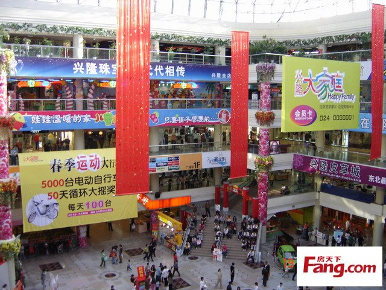
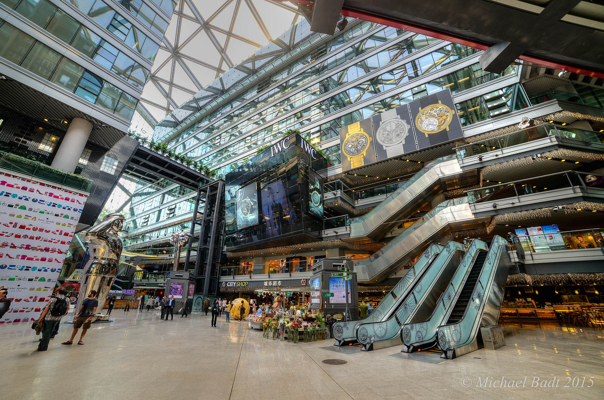
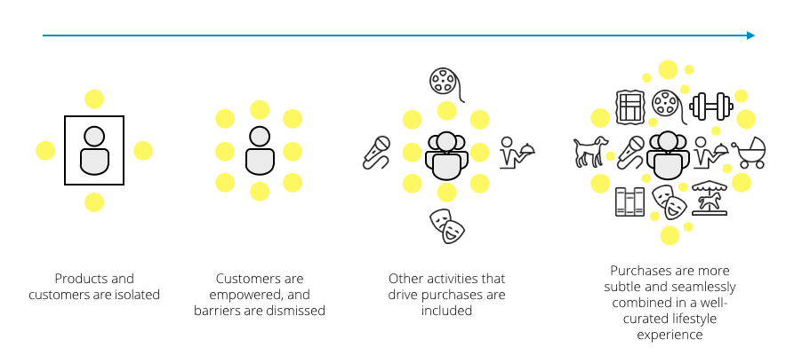

I grew up in the planned economy of Communist China in the early 1980s. On my 5th birthday, my parents gave me my first food stamp and said “Boy, you’re old enough to go and buy soy sauce”. This might seem trivial, but in China this is a time for celebration, a coming of age tradition.
Soy sauce station, 1987
In Communist China, food stamps were reserved for special ingredients, like candy, chocolate and soy sauce.
Like a good boy, I trudged down excitedly to the soy sauce station. All the products were hidden behind a wooden screen. Frankly, the employees were often serious and cold. Imploring myself to speak up I Stood on my tip toes, and said politely “Aunty, can I please have a bottle of soy sauce”. The employee was the master of the experience, and could decide whether they would give you the bottle or not.

In 1988, citizens in Nanchang, Jiangxi Province, lining up for exchanging 10 kilograms of rice by using the food stamp for February, reference
Notice the abundance of barriers in the shopping experience. No looking, no touching, no tasting. Customers had zero control over their own experience.
My first supermarket experience, 1992
In the early 1990s, significant economic reforms began to influence the everyday lives of Chinese people. We stopped using food stamps.
I took a routine Saturday trip to my favourite bookstore. That day, I laid eyes on my first ever supermarket. I stared in amazement. ‘Supermarket’ in Chinese was a totally new word. I wondered what it meant. Superhero? Super what?
I walked in and felt like a super kid, and the king of the world. It seemed incredible that you could touch and buy anything. The whole China was crazy about the shop. Lotus Supercenter, one of the first supermarkets in Shanghai in 1990, 'sold' 600 chicken in the first day, but only 200 of them were paid (reference).
 The first supermarket in Canton, Guangdong Province, 1981 reference
Power was shifting towards the customer. Shoppers now had more choice and could shop based on their own interests.
First date in a shopping mall, 2001
I stood waiting for my first date in one of Chengdu’s first shopping mall. I picked up two ice creams. Unfortunately they started melting down my hands as she was running late. To pass the time, I pondered nervously what we would do that day. The possibilities were many - I could shop, eat, drink, play arcade games or see a movie.
Malls were becoming the destination of choice for young people to spend time with family and friends. It was about shopping still, but more than shopping.
Contrast the mall visit to my food stamp shopping experience. Where I was tense, unempowered and uninspired while shopping for soy sauce, in that shiny new mall I felt excited, inspired and emotional. Shopping for soy sauce was complete in two minutes, but in the mall I often spent six hours.

Xinlong Mall, Shenyang, Liaoning Province, 2011
Even the supermarket felt bland in comparison. Supermarkets were a highly individualized shopping experience, but the focus was shifting to creating a comfortable place where shoppers are happy to spend their time. It went from ‘me’ to ‘us’.
Lifestyle complex, 2015
Attending a seminar that compares chinese philosophy to Western philosophy is not an activity you associate with your average shopping mall, yet that’s exactly what I did earlier this year at Beijing’s Parkview Green complex.
Walk through the entrance, and you might think you’ve landed inside New York’s MoMa or London’s Tate Modern. Part event space, part restaurant, part art exhibit and part retail. Parkview Green throws out many of the conventional mainstays in retail. You won’t find a menswear floor, or a dining hall. Instead, shoppers are treated to a curated maze of discovery and transition seamlessly from admiring art installations, to shopping, eating and learning.
Well-curated art exhibitions in the shopping area, reference
It’s a fine example of category convergence in retail. Rather than the transaction focused nature of a traditional shopping mall, this ‘lifestyle complex’ gives customers a million reasons to visit beyond shopping.

Conclusion
Let’s analyze the evolution in retail between each different shopping experience.
Soy sauce station to supermarket: Barriers between brands, products, employees and shoppers are rapidly disappearing.
Supermarket to shopping mall: The Shopping journey is still transaction focused, but retailers start to bring other activities into the mix to encourage shoppers to spend more time around retail stores.
From the shopping mall to the lifestyle complex: Conventional retail wisdom starts to disappear. Retailers now curate a dynamic list of events, pop up stores and exciting experiences to keep shoppers coming back - not just for shopping.
I was lucky to grow up in Communist China and witness the the shift from emotionless transactions to experience driven retail. In Western societies, retail as we know it has heralded from the 1900s. In China, the pace of change is stark.

To retailers looking to modernize and stand out in a new era of shopping, here are some key questions:
- Is there a barrier that separates products, employees and customers?
- Are your customers empowered? Is it easy for them to choose their own shopping journey, or are you dictating the way they should experience the brand?
- Are there reasons to visit your store beyond the transaction?
- How much are you influencing your customers lifestyle? Are they proud to announce a relationship with your brand to their friends?